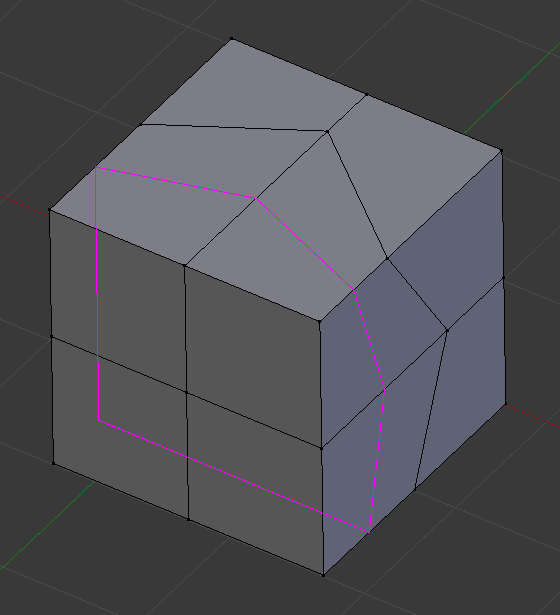

Loop Subdivide¶
Loop Cut and Slide¶
Reference
| Mode: | Edit Mode |
|---|---|
| Panel: | |
| Hotkey: | Ctrl-R |
Loop Cut and Slide splits a loop of faces by inserting a new edge loop intersecting the chosen edge.
Usage¶
The tool is interactive and has two steps:
Pre-visualizing the Cut¶
After the tool is activated, move the cursor over a desired edge. The cut to be made is marked with a magenta colored line as you move the mouse over the various edges. The to be created edge loop stops at the poles (tris and n-gons) where the existing face loop terminates.
Sliding the new Edge Loop¶
Once an edge is chosen via LMB, you can move the mouse along the edge to determine where the new edge loop will be placed. This is identical to the Edge Slide tool. Clicking LMB again confirms and makes the cut at the pre-visualized location, or clicking RMB forces the cut to exactly 50%. This step is skipped when using multiple edge loops (see below).

Preview of edge loop location. |

Interactive placement of edge loop between adjacent loops. |
{kind=link}
{kind=link}
Options¶
The options are available while the tool is in use, and later in the Adjust Last Operation panel.
Loop Cut¶
- Number of Cuts Wheel or PageUp / PageDown
After activating the tool, but before confirming initial loop location, you can increase and decrease the number of cuts to create, by entering a number with the keyboard, scrolling Wheel or using PageUp and PageDown.
Note
When creating multiple loops, these cuts are uniformly distributed in the original face loop, and you will not be able to control their positions.

Preview of multiple edge loops.

Result of using multiple cuts.
- Smoothness Alt-Wheel
Smoothing causes edge loops to be placed in an interpolated position, relative to the face it is added to, causing them to be shifted outwards or inwards by a given percentage, similar to the Subdivide Smooth tool. When not using smoothing, new vertices for the new edge loop are placed exactly on the pre-existing edges. This keeps subdivided faces flat, but can distort geometry, particularly when using Subdivision Surfaces. Smoothing can help maintain the curvature of a surface once it is subdivided.

Added edge loops without smoothing.

Same edge loops, but with smoothing value.
- Falloff
- Falloff type for Smoothness, changes the shape of the profile.
Edge Slide¶
- Even E
- Only available for single edge loops. This matches the shape of the edge loop to one of the adjacent edge loops. (See Edge Slide tool for details.)
- Flip F
- When Even is enabled, this flips the target edge loop to match. (See Edge Slide tool for details.)
Offset Edge Slide¶
Reference
| Mode: | Edit Mode |
|---|---|
| Panel: | |
| Hotkey: | Shift-Ctrl-R |
Add two edge loops on either side of selected loops.
- Cap Endpoint
- Extends the loop by creating triangles at endpoints.
- Edge Slide
- See Edge Slide tool.
Subdivide Edge-Ring¶
Reference
| Mode: | Edit Mode |
|---|---|
| Panel: |
Take an edge ring, and subdivide with interpolation options.
- Options
- See Bridge Edge Loops.